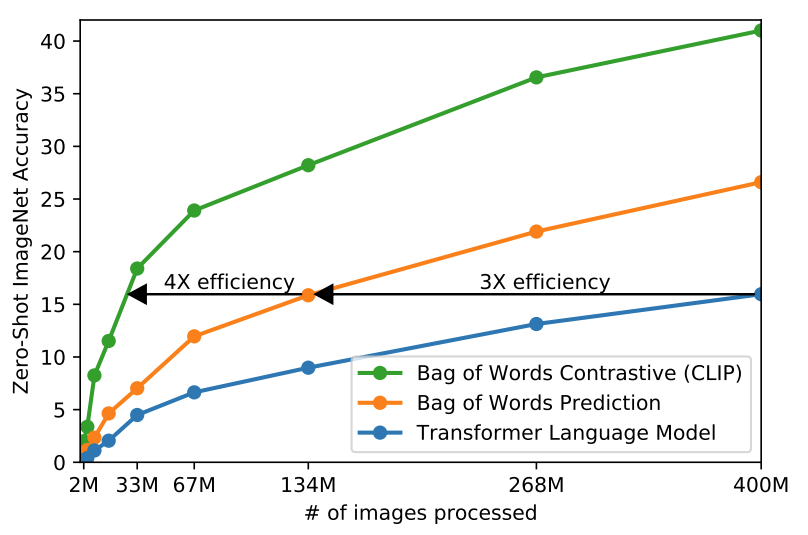
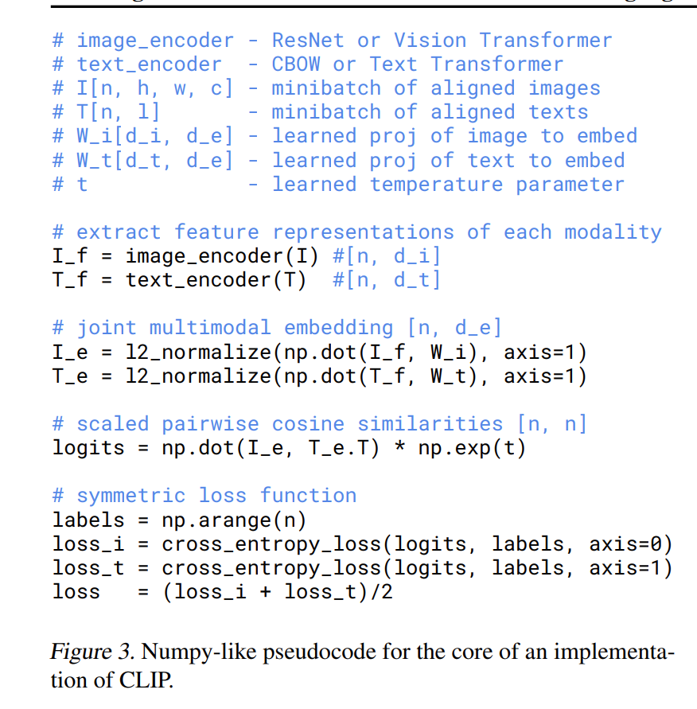
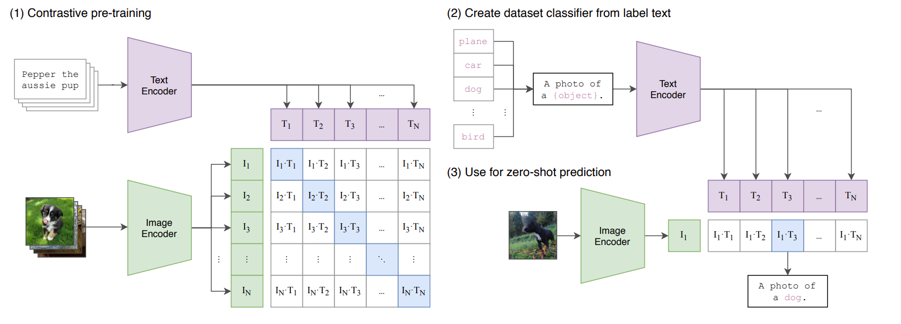
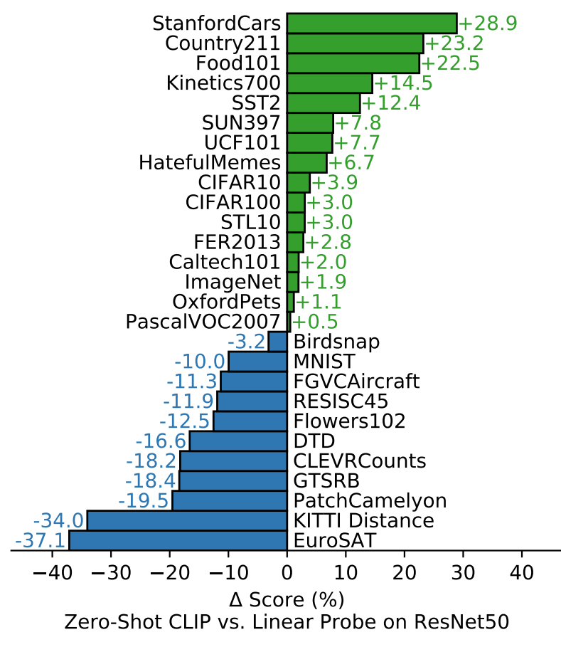
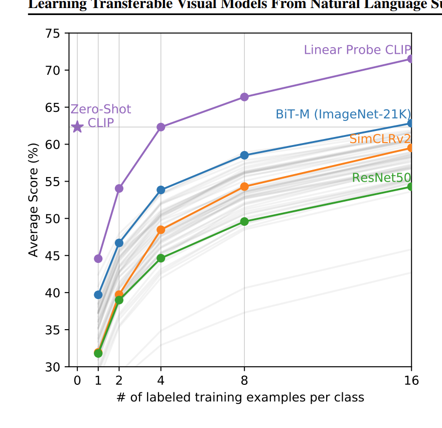

CLIP学习笔记
Learning Transferable Visual Models From Natural Language Supervision 学习笔记
Abstract
这篇文章之前的计算机视觉系统是用事先设定好的对象类别来训练，这种方式限制了他们的通用性和可用性。原因是使用了额外的 labeled data 来指定视觉的概念。
OpenAI 发现直接从图像的原始文本来学习是非常好的办法。他们说预测哪个标题与哪个图像对应的简单预训练任务是一种有效且可扩展的方式，可以在从互联网收集的 4 亿数据对（文字说明，图像）对数据集上从头开始学习当前最好的图像表示方法。在下游任务上，他们可以通过用自然语言匹配视觉概念从而实现zero-shot transfer（一种推理的图片认知方式，比如你机器学习过马和黑白相间，告诉你斑马是黑白相间的马，就应该能识别出来斑马）。
他们用三十几个数据集来测试这种方法的性能，展示了强大的迁移能力，可以在 ImageNet zero-shot 上媲美 ResNet-50 的精度，而无需使用它所训练的128万个训练示例中的任何一个。
Introduction and Motivating Work
虽然从自然原始文本中的预学习方式改变了 NLP，但是在计算机视觉领域，人们仍在提前标注好的 ImageNet 数据集上预训练模型。作者说之前的弱监督模型和直接从自然语言中学习图像特征的模型的区别主要是规模。
所以作者们缩小了这个差距，他们创建了一个包含 4 亿数据对的（图像，文字说明）的新数据集，从头开始训练 ConVIRT 的简化版本（Contrastive Language-Image Pre-training）用于对比语言-图像的预训练，这是自然语言监督学习的方法。
他们训练了一个计算量级相差超过 100 倍的 8 个模型，发现计算量级越大，模型表现越好。CLIP 可以在预训练期间学习很多广泛的任务。他们在 30 多个数据集上测试了 CLIP 的 0 次学习的迁移能力，发现都非常强悍，他们使用了 linear-probe 的方法来证实了这一点。
Approach
这个方法的核心是从自然语言中包含的监督中学习感知的想法。在当时，有很多前辈也采用了这种方法。但是他们的方法描述比较混乱，他们工作的共同点是将自然语言作为训练信号。并且因为早期的对于自然语言模型（n-gram and topic models）不够完善，但是现在自然语言模型（Transformer 和 自监督的学习方式）很好了。
和其他方法相比，利用自然语言训练的优势。和图像分类的标准标签相比，他不需要采取经典的机器学习兼容格式“从很多个标签中找到一个最符合的”，并且找到大量的训练集就简单许多，他可以被动的从网上的大量文本中学习。从自然语言中学习不仅仅是学习一个表征，它还可以和自然语言结合起来，使得模型具有良好的 zero-shot 迁移能力。
找数据集是一种比较费劲的事情，MS-COCO，Visual Genome，都是非常好的高质量人工标注数据集，但是样本数量太少。YFCC100M 具有非常大的样本数量，但是数据参差补齐，质量太差。（有多么参差不齐呢，他们很多的标注都是自动生成的文件名）在过滤以仅保留具有自然语言标题和/或英文描述的图像后，数据集缩小了 6 倍，只有 1500 万张照片。 这与 ImageNet 的大小大致相同。
自然语言监督的非常大的好处就是具有非常多互联网公开的数据，现有数据集没有反映这个良好的性质，所以不能用以前的数据集，为了解决这个问题，他们爬了一个包含 4 亿对（文本，图像）的数据对，他们称此为 WIT 数据集。
之前先进的计算机视觉系统 ResNeXt101-32x48d 和 Noisy Student EfficientNet-L2 都需要训练以 GPU/TPU 年为单位训练，训练效率是扩展自然语言监督能力的重要方法，所以他们精心选择了预训练方法。
第一个预训练方法是预测图像的说明文字，然后发现效率太差。
第二个方法是预测图像里面有什么特征单词，选取了 Bag of Words Prediction 的方式。这个提高了三倍
第三个方法是对比学习，把文本当作一个整体来配对图像，这个让学习 zero-shot 的效率比最开始提高了 4 倍。

最后的方法就是给定 \(N\) 个数据对，然后 CLIP 被用来训练 \(N ^ 2\) 个可能发生的对里面哪些实际发生，有 \(N\) 个好样本，有 \(N^2-N\) 个坏样本。

这是 CLIP 的伪代码实现，先把图片和文本进行进行 encoder，之后经过线性投影层进行归一化，然后算一个相似度，然后通过交叉熵目标函数算loss，把两个loss取平均。
里面还提到了一个 softmax 的 temperature 参数，就是能够让学习曲线变得光滑（不自信的时候）/非光滑，加快学习率的时候。
这里面还有一个 cross_entropy_loss 函数，这个就是令 \(y_{ic}\) 是样本匹配函数 \(i\) 样本真实类别是不是 \(c\)，\(p_{ic}\) 是 \(i\) 样本是 \(c\) 类别的预测概率（经过 softmax 之后），\(N\) 个样本 \(M\) 个类别，那么 \[ L = -\frac{1}{N} \sum_{i = 1} ^ N \sum_{c = 1} ^ M y_{ic} \ln (p_{ic}) \]

这张图片就是整个 CLIP 的模型示意图，首先是预训练部分先把文本传到 Text Encoder 里面，图像传到 ImageEncoder 里面，然后做预训练的对比学习，对角线方向是正样本，其他的是负样本。他是没有分类头的。先把标签的单词变成句子（prompt template，好处是模型预训练的时候看见的是句子，后面也是句子比较好），然后来到一张照片，我们把它扔到 ImageEncoder 里面，然后找到一个最相似的特征，就是对应找到的标签。比之前好的是没有固定的类别概念，比如原来的方式不能判断类别里面没有的概念，但是由于使用了自然语言处理， CLIP 只要在前面加一个三轮车类就行了。
图像编码器有两种架构 ResNet-50/Vision Transformer，文本编码器是一个 Transformer。
之前的计算机视觉模型总是单纯的增加宽度或者高度来优化模型，但是对于 ResNet 编码器，作者发现可以给宽度，深度，分辨率上分配额外计算是优于前面的，对于文本编码器，只缩放模型宽度。
他们一共训练了八个模型，五个 ResNets 和 三个 Vision Transformer。训练了一个 ResNet-50, ResNets-101, RN50×4,RN × 16,RN50×64，对于 Vision Transformer 训练了一个 ViT-B/32、一个 ViT-B/16 和一个 ViT-L/14。
发现最好的模型是训练时间最长的 ViT-L/14@336px. 论文里面的测试数据都是使用这个模型。
Experiments
这是重要部分

这个实验表示没有用下游任务数据集里面的东西训练和 ResNet50 的对比结果。
Few-shot CLIP v.s. SOTA (ImageNet) SSL methods

- Zero-shot CLIP的性能和4-shot CLIP差不多；
- Few-shot CLIP的performance远高于之前的SOTA模型。
歧义说明
比如你的 prompt 可能会是 a photo of {object}
的形式，但是可能会被理解成一词多义，比如说 cranes
会被理解成起吊机或者是鹤，我们可以通过添加提示的方法来增高准确率，比如说
A photo of a {label}, a type of pet 这种。
Limitation
CLIP的零样本在有些任务上仍然很弱，在某些详细物品分类任务不擅长。
作者还发现 zero-shot CLIP 在复杂抽象的推理上不是很擅长（但是实际上 human 也会不擅长）
对于不太可能包含在CLIP预训练数据集中的新任务，例如，照片中最近的汽车的距离进行分类，CLIP的性能可以接近随机。CLIP在MNIST的手写数字上仅达到88%的正确率，这种也很好理解，因为这样的图片基本上不会广泛存在于网络搜索图片中。
尽管CLIP可以灵活地为各种各样的任务和数据集生成零样本的分类器，但CLIP仍然仅限于从给定零样本分类器中的那些概念中进行选择。与真正灵活的方法(如图像字幕)相比，这是一个重大的限制。
另外CLIP是通过与互联网上的图像配对的文本进行训练的，而这些图像-文本对，是未经过滤和管理的，所以将会导致CLIP模型学习许多社会偏见。